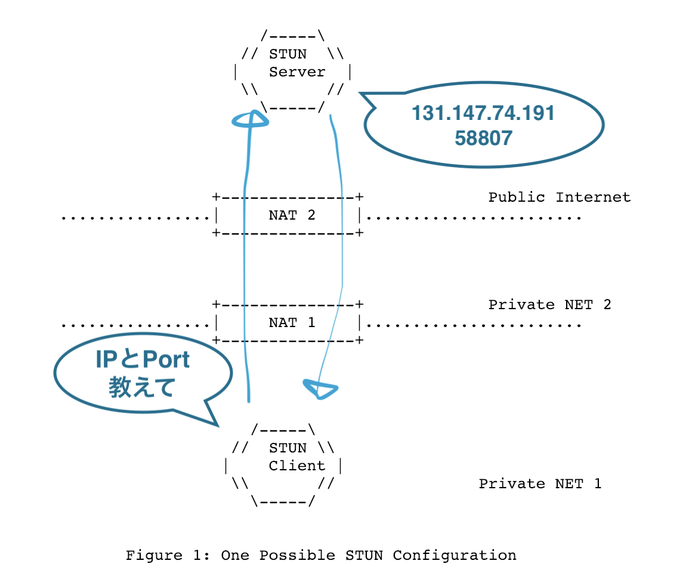

はじめまして
- @leader22
- 技術ブログも書いてます
- console.lealog();
- 今日の発表の元ネタ記事もあります

半分くらいはこの記事に書いてあります。
このRFC5389についての話をします。
インターネットプロトコルによって構築されたコンピュータネットワークにおいて、パケットヘッダに含まれるIPアドレスを、別のIPアドレスに変換する技術である。
from https://ja.wikipedia.org/wiki/ネットワークアドレス変換
もっと詳しく知りたい人へ👇
icecandidateというやつもっと詳しく（ｒｙ

これで自分のNW情報がわかる！
発表タイトルの(一部)とはそういう意味で、今日はさっきの図の範囲の話しかしません！
const pc = new RTCPeerConnection({
sdpSemantics: 'unified-plan',
// コレを指定すると
iceServers: [{ urls: 'stun:stun.l.google.com:19302' }],
});
pc.createDataChannel('');
pc.createOffer()
.then(s => pc.setLocalDescription(s));
// ココが多く発火する
pc.onicecandidate = ev => {
if (ev.candidate !== null) {
console.log(ev.candidate.candidate);
} else {
console.log(pc.localDescription.sdp);
}
}
この時、ブラウザが内部的にSTUNを使ってます。 candidateやSDPを読めば使われてるかどうかがわかります。
その内部的な挙動を切り出して実装したのが、今回のやつです。
実装 = このメッセージの組み上げ・読み取りを抽象化してコードにすること。
0000000000000001000000000000000000100001000100101010010001000010100111110111001000010100010000101100101101111000011111100010110001011110000000001111011000111111
お、おう・・。
読めないし、理解できない・・。
000100002112a4429f721442cb787e2c5e00f63f
だいぶマシになったけど、16進数を脳内変換する能力が必要。
00 01 00 00 21 12 a4 42 9f 72 14 42 cb 78 7e 2c 5e 00 f6 3f
少しだけ読みやすく区切るとこうなる。（プログラムで扱うのはほとんどこっちなはず）
この数字の並びにはどういう意味が・・？
このフォーマットに沿って、さっきの数字を当てはめていけばOK！
0 1 2 3
0 1 2 3 4 5 6 7 8 9 0 1 2 3 4 5 6 7 8 9 0 1 2 3 4 5 6 7 8 9 0 1
+-+-+-+-+-+-+-+-+-+-+-+-+-+-+-+-+-+-+-+-+-+-+-+-+-+-+-+-+-+-+-+-+
|0 0| STUN Message Type | Message Length |
+-+-+-+-+-+-+-+-+-+-+-+-+-+-+-+-+-+-+-+-+-+-+-+-+-+-+-+-+-+-+-+-+
| Magic Cookie |
+-+-+-+-+-+-+-+-+-+-+-+-+-+-+-+-+-+-+-+-+-+-+-+-+-+-+-+-+-+-+-+-+
| |
| Transaction ID (96 bits) |
| |
+-+-+-+-+-+-+-+-+-+-+-+-+-+-+-+-+-+-+-+-+-+-+-+-+-+-+-+-+-+-+-+-+
先頭から、
この合計160bit = 20byte固定なのがヘッダ。
0 1 2 3
0 1 2 3 4 5 6 7 8 9 0 1 2 3 4 5 6 7 8 9 0 1 2 3 4 5 6 7 8 9 0 1
+-+-+-+-+-+-+-+-+-+-+-+-+-+-+-+-+-+-+-+-+-+-+-+-+-+-+-+-+-+-+-+-+
|0 0|0 0 0 0 0 0 0 0 0 0 0 0 0 1|0 0 0 0 0 0 0 0 0 0 0 0 0 0 0 0|
+-+-+-+-+-+-+-+-+-+-+-+-+-+-+-+-+-+-+-+-+-+-+-+-+-+-+-+-+-+-+-+-+
|0 0 1 0 0 0 0 1 0 0 0 1 0 0 1 0 1 0 1 0 0 1 0 0 0 1 0 0 0 0 1 0|
+-+-+-+-+-+-+-+-+-+-+-+-+-+-+-+-+-+-+-+-+-+-+-+-+-+-+-+-+-+-+-+-+
|1 0 0 1 1 1 1 1 0 1 1 1 0 0 1 0 0 0 0 1 0 1 0 0 0 1 0 0 0 0 1 0|
|1 1 0 0 1 0 1 1 0 1 1 1 1 0 0 0 0 1 1 1 1 1 1 0 0 0 1 0 1 1 0 0|
|0 1 0 1 1 1 1 0 0 0 0 0 0 0 0 0 1 1 1 1 0 1 1 0 0 0 1 1 1 1 1 1|
+-+-+-+-+-+-+-+-+-+-+-+-+-+-+-+-+-+-+-+-+-+-+-+-+-+-+-+-+-+-+-+-+
なんとなく薄目で見える気がしませんか・・！
+-+-+-+-+-+-+
|00 01|00 00|
+-+-+-+-+-+-+
|21 12 a4 42|
+-+-+-+-+-+-+
|9f 72 14 42|
|cb 78 7e 2c|
|5e 00 f6 3f|
+-+-+-+-+-+-+
なんか読めそうな気がしてきましたね？！
+-+-+-+-+-+-+
|00 01|00 00|
+-+-+-+-+-+-+
|21 12 a4 42|
+-+-+-+-+-+-+
|9f 72 14 42|
|cb 78 7e 2c|
|5e 00 f6 3f|
+-+-+-+-+-+-+
先頭から、
0001 as 16進数BINDING-REQUEST02112a442 as 16進数つまり、アトリビュートなしのBINDING-REQUESTを送信していた！
+-+-+-+-+-+-+
|01 01|00 0c|
+-+-+-+-+-+-+
|21 12 a4 42|
+-+-+-+-+-+-+
|9f 72 14 42|
|cb 78 7e 2c|
|5e 00 f6 3f|
+-+-+-+-+-+-+
|00 20 00 08|
|00 01 c3 f7|
|a2 81 ee fd|
+-+-+-+-+-+-+
0101 as 16進数 = 257 as 10進数000c as 16進数 = 12 as 10進数 0 1 2 3
0 1 2 3 4 5 6 7 8 9 0 1 2 3 4 5 6 7 8 9 0 1 2 3 4 5 6 7 8 9 0 1
+-+-+-+-+-+-+-+-+-+-+-+-+-+-+-+-+-+-+-+-+-+-+-+-+-+-+-+-+-+-+-+-+
| Type | Length |
+-+-+-+-+-+-+-+-+-+-+-+-+-+-+-+-+-+-+-+-+-+-+-+-+-+-+-+-+-+-+-+-+
| Value (variable) ....
+-+-+-+-+-+-+-+-+-+-+-+-+-+-+-+-+-+-+-+-+-+-+-+-+-+-+-+-+-+-+-+-+
先頭から、
このアトリビュートは、32bit = 4byte区切りと決まっており、余った部分は適当に埋める決まり。
Comprehension-required range (0x0000-0x7FFF):
0x0000: (Reserved)
0x0001: MAPPED-ADDRESS
0x0002: (Reserved; was RESPONSE-ADDRESS)
0x0003: (Reserved; was CHANGE-ADDRESS)
0x0004: (Reserved; was SOURCE-ADDRESS)
0x0005: (Reserved; was CHANGED-ADDRESS)
0x0006: USERNAME
0x0007: (Reserved; was PASSWORD)
0x0008: MESSAGE-INTEGRITY
0x0009: ERROR-CODE
0x000A: UNKNOWN-ATTRIBUTES
0x000B: (Reserved; was REFLECTED-FROM)
0x0014: REALM
0x0015: NONCE
0x0020: XOR-MAPPED-ADDRESS
Comprehension-optional range (0x8000-0xFFFF)
0x8022: SOFTWARE
0x8023: ALTERNATE-SERVER
0x8028: FINGERPRINT
さっきのアトリビュートのTypeは・・？
+-+-+-+-+-+-+
|00 20|00 08|
+-+-+-+-+-+-+
|00 01 c3 f7|
|a2 81 ee fd|
+-+-+-+-+-+-+
0020 as 16進数8 as 10進数0001c3f7a281eefd as 16進数このアトリビュートは0x0020: XOR-MAPPED-ADDRESSだ！
0 1 2 3
0 1 2 3 4 5 6 7 8 9 0 1 2 3 4 5 6 7 8 9 0 1 2 3 4 5 6 7 8 9 0 1
+-+-+-+-+-+-+-+-+-+-+-+-+-+-+-+-+-+-+-+-+-+-+-+-+-+-+-+-+-+-+-+-+
|x x x x x x x x| Family | X-Port |
+-+-+-+-+-+-+-+-+-+-+-+-+-+-+-+-+-+-+-+-+-+-+-+-+-+-+-+-+-+-+-+-+
| X-Address (Variable) ...
+-+-+-+-+-+-+-+-+-+-+-+-+-+-+-+-+-+-+-+-+-+-+-+-+-+-+-+-+-+-+-+-+
先頭から、
0埋め0x01 OR IPv6: 0x02ポートとアドレスがXOR演算されてるのが特徴。（ロジックは割愛）
+-+-+-+-+-+-+
|00|01|c3 f7|
+-+-+-+-+-+-+
|a2 81 ee fd|
+-+-+-+-+-+-+
Valueのみ抜粋し先頭から、
01 as 16進数c3f7 as 16進数XOR演算するとポート58085にa281eefd as 16進数XOR演算131.147.74.191にこれで読めた！
+-+-+-+-+-+-+
|01 01|00 0c| STUN Message Type | Message Length
+-+-+-+-+-+-+
|21 12 a4 42| MagicCookie
+-+-+-+-+-+-+
|9f 72 14 42|
|cb 78 7e 2c| Transaction ID
|5e 00 f6 3f|
+-+-+-+-+-+-+
|00 20|00 08| STUN Attribute Type(XOR-MAPPED-ADDRESS) | Attribute Length
+-+-+-+-+-+-+
|00|01|c3 f7| -- | Family | X-Port
+-+-+-+-+-+-+
|a2 81 ee fd| X-Address
+-+-+-+-+-+-+
元はといえば、
01 01 00 0c 21 12 a4 42 9f 72 14 42 cb 78 7e 2c 5e 00 f6 3f 00 20 00 08 00 01 c3 f7 a2 81 ee fd
今なら読める🤩
leader22/webrtc-stun: 100% TypeScript STUN implementation for WebRTC.
import * as dgram from 'dgram';
import * as stun from 'webrtc-stun';
import * as pkg from '../package.json';
// communicate on UDP
const socket = dgram.createSocket({ type: 'udp4' });
// use this id for transaction
const tid = stun.generateTransactionId();
const req = stun
.createBindingRequest(tid)
.setSoftwareAttribute(`${pkg.name}@${pkg.version}`);
socket.send(req.toBuffer(), 19302, 'stun.l.google.com');
// ...
さっきのデモで使ったコードと同一のもの。
// ...
socket.on('message', msg => {
const res = stun.createBlank();
// if msg is valid STUN message
if (res.loadBuffer(msg)) {
// if msg is BINDING_RESPONSE_SUCCESS and valid content
if (res.isBindingResponseSuccess({ transactionId: tid })) {
const attr = res.getXorMappedAddressAttribute();
// if msg includes attr
if (attr) {
console.log('my rinfo', attr);
}
}
}
});
これを使えば、ブラウザではなくサーバーでWebRTCを動かす第一歩に・・・！
Bufferの使い方0かどうかnode --inspect-brk ./client.jsdebuggerで止められる